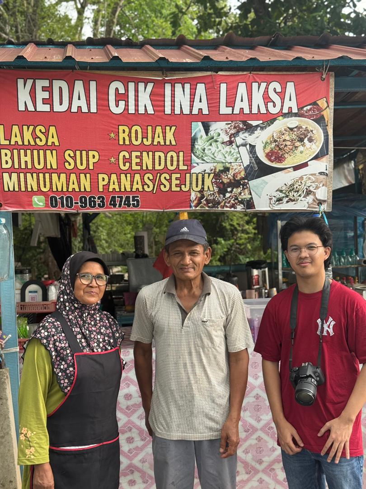

Salina binti Ahmad, or better known as Cik Lina, is a 56-year-old local small entrepreneur. She currently runs a food business in the Timah Tasoh Recreational Park area, Perlis. With extensive experience in the business field, she is known as a hardworking, customer-friendly, and persistent person in earning a living. While her husband Encik Anwar helps her by cooking at the kitchen.
Before opening her business at the Timah Tasoh Recreation Park, Ms. Lina started out as a small trader in her home located near the foothills, opposite the Kaki Bukit Health Clinic. Although it started modestly, the experience taught her a lot about the ins and outs of business, including customer management and food preparation.